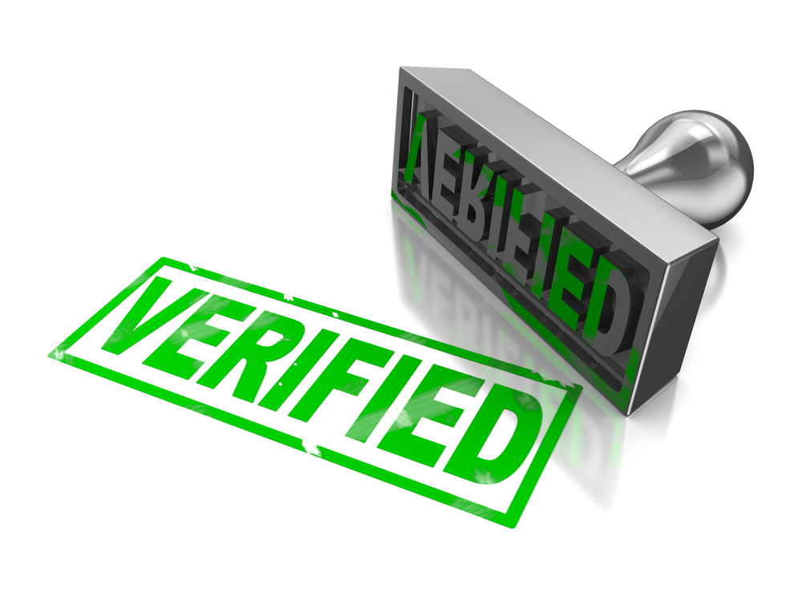

| Home - Topics - Papers - Theses - Blog - CV - Photos - Funny |
Many of these diverse use-cases, however, require users to be able to verify whether or not some transaction has been committed to a blockchain. With currently-deployed blockchains, however, securely verifying transactions unfortunately requires the user's device to be online and connected to the Internet, and to pay the bandwidth and power costs of maintaining connectivity with multiple (perhaps many) nodes on the blockchain's overlay network.

This blog post explores the challenges this verification problem presents for important blockchain applications such as document notarization. We then explore one possible solution: SkipChains, a cryptographically-traversable, offline- and peer-to-peer-verifiable blockchain structure. SkipChains were introduced by the Decentralized/Destributed Systems (DEDIS) lab at EPFL as part of Chainiac, a blockchain-based software update system to be presented at USENIX Security '17. While introduced in the context of a software update system, this blog post focuses not on software updates but other potential applications of blockchains and SkipChains.
One attractive and widely-discussed non-currency use-case for blockchains is in electronically timestamping and notarizing documents such as academic degrees or land records. The essence of the idea is to use a blockchain's tamper-resistance property to make it harder to forge, back-date, or modify important records.
While a promising application, current blockchain approaches to document notarization suffer from several important caveats and limitations. Some are already well-known: for example, that blockchains are not always immutable in practice. Further, in this use-case the blockchain itself really provides only one narrow security property: proof that a particular electronic document existed at some time. A blockchain does not automatically provide other important security properties that we traditionally depend on notaries for, such as to verify the identities of the parties signing a document, and to attest that this signing was done freely and not under duress. Blockchains are certainly useful and can improve the security of notarization, but are not an automatic replacement.
Current blockchains have another important limitation, not yet widely recognized, that severely affects their usefulness for notarization applications. If someone shows you an electronic document, stating they hold a particular academic degree or land title for example, and they claim this document is "on the blockchain," how do you use your favorite personal mobile device (smart phone, laptop, etc.) to verify that the claimed document actually is on the blockhchain? With current public blockchains such as Bitcoin and Ethereum, securely verifying that a document is indeed on the blockchain requires your device to:
For example, suppose Alice is a certified electrician who shows up for a job at Bob's home, but Bob asks for verifiable proof of Alice's professional credentials. Assume that Alice's "electrician" certificate is a digital credential that was issued by an academic or government organization that Bob trusts, and was encoded in an open format such as Blockcerts, and "notarized" by attaching it to a blockchain transaction at the time Alice earned the credential. Alice might have obtained this credential months or even years before Bob calls Alice to work on his home.
When Alice shows up to the appointment, she can use her smart phone to send her credential, along with a cryptographic proof of its inclusion in some blockchain transaction, to Bob's smart phone for verification. For example, Alice might send her credential to Bob's device via Bluetooth or Wifi, or by displaying a QR code for Bob's device to scan. But then what, precisely, does Bob's device do to verify that Alice's credential is indeed on the blockchain? Without this critical verification step, Alice could be showing Bob a forged certificate that was never actually notarized, or a tampered certificate with the name or date changed. Returning briefly to Chainiac's motivating use-case, Alice might be asking Bob to install an application or OS update -- but without verifying that this update is indeed on the blockchain, Alice could give Bob a secretly backdoored image that the software vendor was coerced into signing. Bob might never know that the document or software Alice gave her was not the official, notarized version that everyone else sees on the public blockchain.
The Blockcerts verification process documentation specifies that:
A Blockchain Certificate must have a `certificate.signature.anchors` field, which must contain at least one anchor to a blockchain transaction.[...]
Supplied with the blockchain identifier and transaction id, the transaction can be obtained from a service like blockchain.info.
There are two crucial unstated and unaddressed issues here, and in similar blockchain-based notarization schemes. These issues are not in any way specific to Blockcerts, however, but arise from basic limitations of current blockchains.
First, in order for Bob to retrieve the transaction from blockchain.info and verify that it indeed anchors the certificate Alice presented, both Bob and blockchain.info must be online and able to communicate with each other. If Bob lives in a remote village in the developing world where Internet connectivity is slow and expensive, online verification might not be so practical. Bob may then just have to take Alice's word -- not exactly the security advancement we hoped for, especially since poor, disconnected communities already tend to be vulnerable to fraud and criminal attack. Alternatively, Bob's Internet access might be temporarily unavailable -- perhaps because that's what Alice showed up to fix. Or perhaps Alice is the captain of a container ship that just arrived in Bob's port, in which case Bob needs to verify thousands of bills of lading. This online verification incurs substantial communication costs even when it works reliably -- and the entire port may have to shut down during a temporary Internet outage.
Second, the basic security purpose of the blockchain concept is to distribute trust so that your security is not dependent on any one central authority or trusted third party. But any Web-based transaction query service like blockchain.info is just such an authority or trusted party. If the service is compromised or malicious, its HTTPS private key is stolen, its domain name is hijacked, or if any Web certificate authority mis-issues an HTTPS certificate for it, then the attacker can collude with Alice to convince Bob that any arbitrary document is "on the blockchain" when it isn't.
The transaction query service becomes a single point of failure or compromise, exactly what the blockchain concept was supposed to eliminate. And if you're going to have single points of failure or compromise, you'll be much better off using vastly cheaper and more mature technology such as Oracle databases or Amazon cloud services.
Bob could in principle run a Bitcoin full node, thereby maintaining a mirror copy of the entire blockchain. Having a full local copy of the blockchain would make it quick and easy for Bob to verify Alice's certificate, and quite secure. But the sheer size of the blockchain and the continual bandwidth requirements of downloading every block is already impractical even for most users with desktop PCs and fast Internet connections, let alone people with only a low-power smartphone and limited network bandwidth.
This verification efficiency problem is precisely what motivates Simplified Payment Verification (SPV), a common technique in mobile Bitcoin clients. In short, an SPV client maintains connections with one or (preferably) several full nodes, and downloads only block headers (about 80 bytes every 10 minutes) rather than full blocks. While vastly more economical than running a full node, an SPV client must still be online to verify transactions, and still consumes substantial precious bandwidth and power to follow the blockchain. The bandwidth an SPV client must consume to "catch up" with the blockchain is linearly proportional to the time since the client was last run, which can be megabytes if the app hasn't synced for several months -- and much more on a faster blockchain such as Ethereum, which produces new blocks every 15 seconds.
SPV also introduces security weaknesses. If the client downloads the blockchain from only a single full node, then that full node again becomes a single point of failure or compromise. This full node could isolate the client from the rest of the network and present the client with a fake "view" of the blockchain -- e.g., a fork of the public blockchain with much less work, containing a secretly forged certificate that Alice wants Bob to accept. If the SPV client adopts the more secure practice of syncing against multiple independent full nodes, these connections consume more bandwidth and power. Even full nodes and well-connected SPV clients remain vulnerable to routing-based hijacking and isolation attacks. In addition, SPV may not scale to large number of thin clients without a specialized header relay network.
The fundamental problem is that in a conventional proof-of-work blockchain like Bitcoin or Ethereum, there is no cryptographic means for anyone to distinguish the real public blockchain from a fake one, except by comparing the amount of work invested in two competing views. In other words, current blockchains can never be validated in any absolute sense, but only relative to the perspectives of other active communication partners. Because all verification is relativistic, anyone who is not online, or who an attacker can isolate from the rest of the network even temporarily, can be tricked into accepting a secret, fake blockchain forked from the real blockchain at an arbitrary time in the past with relatively modest proof-of-work effort by the attacker.
In summary, verifying a transaction on a current public blockchain such as Bitcoin or Ethereum fundamentally requires the verifier to be online and well-connected. Absent either of these requirements, verification of a transaction -- or a certificate anchored in a transaction -- is either impossible or insecure.
In a paper at USENIX Security '16 we introduced ByzCoin, a next-generation blockchain architecture developed by the Decentralized/Destributed Systems (DEDIS) lab at EPFL. In summary, ByzCoin offers immediate transaction finality through scalable Byzantine consensus, improves on Bitcoin's transaction throughput by two orders of magnitude (from ~7 to ~900 transactions per second), and similarly improves on Bitcoin's transaction latency by an order magnitude (from ~10 minutes to 1--2 minutes).
One of the tools ByzCoin uses to make Byzantine consensus scale well is to leverage collective signing or CoSi, an efficient digital signature aggregation protocol that we introuced in an earlier paper we presented at IEEE Security & Privacy '16 (a top security/privacy conference still affectionately known as "Oakland" even though the conference is no longer actually held in Oakland). To enable the use of Byzantine consensus in a proof-of-work blockchain, ByzCoin forms a consensus group from a sample of recently-successful proof-of-work miners -- e.g., from the past day or the past week of mining effort. This consensus group then executes the classic PBFT consensus algorithm to commit transactions securely with immediate finality.
The Prepare and Commit phases of in the PBFT protocol traditionally uses unscalable "all-to-all" communication, however, as illustrated below.
In place of all-to-all communication, ByzCoin instead employs CoSi during each of these phases. Each run of CoSi produces a single compact, efficiently-verifiable collective signature cryptographically attesting that a sufficient fraction of the consensus group has "signed off" on preparing, or committing, each new block.
While ByzCoin's collective signatures were mainly intended for the consumption of other miners in the consensus group, in principle anyone can check these collective signatures to determine whether a block has been committed to the blockchain. The verifier can be a low-power device with little or no Internet connectivity, and doesn't need to maintain connections with many other network nodes, because the collective signature itself contains cryptographic evidence that a sufficient threshold of miners have validated and committed the block.
So does ByzCoin already solve the offline transaction verification problem? Not quite. To check a collective signature, the verifier needs to know the correct public keys representing the set of miners comprising the consensus group at the moment in time when the block in question was committed. Because ByzCoin forms this consensus group from a constantly-rotating sample of miners who recently solved proof-of-work puzzles, this set of public keys may continually change -- up to once every few minutes.
If Bob wants to verify a certificate Alice notarized on the blockchain a year or two ago, that block might have been committed and collectively signed by a completely different set of miners, with different public keys, from the set of miners who are currently committing transactions -- or who were committing transactions as of the last time Bob's personal device caught up with the blockchain. If Bob's device is online now or synced recently, then Alice's certificate may be long in the past with respect to Bob's latest reference point on the blockchain. In this case, Bob's device can in principle "walk backwards" on the blockchain from his reference point to the block containing Alice's certificate, following the hash links from each block to the immediately prior one, provided Bob has stored (or otherwise has access to) all the relevant block headers.
If Bob's device has been offline for a long time, however, then Bob's reference point on the blockchain may be behind Alice's in time. In this case, Bob's device must walk forward in time on the blockchain from his reference point to the block containing Alice's certificate. Bob obviously won't have the relevant block headers yet, since he was offline when they were committed -- but Alice might have copies of those intervening block headers, which she can simply send to Bob via peer-to-peer communication. How does Bob know these more recent block headers Alice supplied him represent correct blocks from "the one true blockchain" and not a fake blockchain that Alice concocted to mislead Bob? With conventional blockchains, he can't tell the difference -- but with ByzCoin or Chainiac, he simply checks the collective signatures.
Given that the consensus group changes over time, however, what set of public keys does Bob check the collective signatures against? This is where Chainiac's first key feature comes into play. Whenever the consensus group changes, a threshold of the previous consensus group collectively signs a "forward link" containing two pieces of information:
The following figure illustrates how backward and forward links work in Chainiac.
All committed blocks contain back links represented by hashes, as in a conventional blockchain. However, once the successor to a given block is committed, the consensus group responsible for the previous block creates and collectively signs a forward link -- a bit like securely issuing an informational "addendum" for the prior, already-committed block. This new addendum is not covered by the next block's backward hash link -- it can't be, because that would create a cryptographically impossible circular dependency. The forward link's security is instead assured by a collective signature, which encapsulates efficient evidence that a large number of miners have witnessed, verified, and signed off on this forward link's correctness.
Using these collectively signed forward links supplied by Alice along with the block headers, Bob can securely walk forward in time from his last blockchain reference point to Alice's, without actually having to trust Alice at all. Bob learns about all relevant consensus group changes along the way, so that he always knows exactly the correct set of public keys against which to check each collective signature in the chain. Since all of these forward links are collectively signed by many miners, Alice cannot create a fake blockchain that Bob will accept unless she compromises or colludes with a large number of miners during the time period since Bob last synced with the blockchain.
Between the back links that are already standard in blockchains, and the collectively-signed forward links that Chainiac introduces, any party can securely "catch up" on a Chainiac blockchain via peer-to-peer communication with anyone else who is more up-to-date -- provided the latter party has actually stored and can forward all the intervening block headers and forward links. As with the SPV approach, however, even just downloading and storing all block headers can impose a significant bandwidth, power, and storage burden on low-power mobile devices.
For this reason, Chainiac introduces SkipChains, a novel cryptographic blockchain structure loosely inspired by skip lists. The fundamental idea of a skip list is to augment a conventional singly-linked or doubly-linked list with additional long-distance links, which are structurally redundant, but allow much more efficient traversal and search across arbitrary distances along the timeline in a logarithmic, rather than linear, number of steps.
Chainiac adapts the skip list idea to blockchains by adding long-distance links both forward and backward in time, as illustrated below.
When Chainiac creates a new block, that block includes not just one hash link to the immediately prior block, but also additional hash links to that point farther backward in time. This way, any party can find, or prove the integrity of, an old transaction anywhere in a blockchain's prior history with a small (logarithmic) number of hash-link steps. This long-distance back-link refinement is not new or unique to Chainiac; other blockchain and hash-chain designs have incorporated this idea for backward links.
What is new and unique to Chainiac is to provide long-distance forward links as well via collective signatures. With both long-distance forward and backward links, a SkipChain becomes cryptographically traversable in both directions, such that one party can efficiently prove the correctness of a transaction anywhere in time with respect to the other party's reference point on the blockchain, in a logarithmic number of steps, regardless of which party has a more up-to-date view of the blockchain.
If Alice wishes to show her professional certificate to Bob, for example, but Bob's personal device last synced with the blockchain months or years before when Alice received her certificate, Alice's device simply sends Bob's device a small (logarithmic) number of collectively signed forward links to prove securely that Alice's certificate is indeed on the blockchain. Through this peer-to-peer interaction, Bob's device has now obtained a more recent blockchain reference point from which he can not only validate Alice's certificate, but also validate future blockchain updates more securely. Even if a particularly strong attacker eventually cracks or steals the private keys of a threshold number of members of an old consensus group, the attacker cannot get Bob -- or any other party with a more recent reference point -- to accept a fake version of the blockchain.
Like single-block forward links, long-distance forward links in Chainiac include metadata summarizing any changes in the public keys of consensus group members between the source and destination points in time. A long-distance forward link effectively summarizes all the public key changes in the consensus group across all the one-hop forward links the long-distance link skips over. The size of such an update is limited to the total number of public keys in the consensus group, regardless of the distance in time or number of blocks the link represents, in the worst-case where the consensus group "rolls over" completely during that time period.
Since a long-distance forward link cannot actually be formed and signed until the (future) block it points to has been committed to the blockchain, Chainiac keeps a subset of "old" consensus groups alive and active for longer than they might otherwise be, "watching" for the blockchain to grow long enough to create and collectively sign the desired forward link. This extension of the "signing lifetimes" of old consensus groups can create a risk of marginally weakening security, by giving a potential attacker more time to crack or steal the private keys of a threshold number of members of that consensus group. The collective signatures still ensure that the attacker would have to compromise many such members' private keys and not just one, but even so, we would prefer to minimize the blockchain's potential weakness to a powerful, patient, and persistent attacker.
We can bolster Chainiac's security against long-term persistent attacks in at least two ways.
First, Chainiac can enforce a maximum forward-link distance: one year, for example. Under such a policy, all honest consensus group members securely erase their private keys after at most one year, limiting the time window an attacker has to compromise a threshold number of private keys from an old consensus group. This forward-link distance limit implies that extremely out-of-date devices needing to catch up with the blockchain after multiple years will need to catch up "one year at a time" -- at a cost linear rather than logarithmic in the number of years. This is probably not much of a problem in practice, since few electronic devices tend to remain in use after that many years anyway.
A second way to strengthen a SkipChain's forward security, which we have not yet implemented but plan to, is for consensus group members to use distinct, fresh key pairs when collectively signing each successive level of long-distance forward links. Each time a consensus group signs a forward link at one level, all consensus group members derive new key pairs for the next level and include the next-level public keys in the metadata for the forward link currently being signed. Once the collective signature at this level is formed, all honest consensus group members securely erase their private keys at this level and retain only the private keys for the next level. In this way, a powerful attacker who can compromise a threshold number of private keys over a long time period obtains only the ability to forge comparably long-distance forward links. All shorter-distance forward links remain secure and unforgeable. Such an attacker then can only compromise devices that sync with the blockchain extremely rarely. Devices that sync more regularly, either by going online or via peer-to-peer updates, remain immune to such an attacker because they only ever follow shorter-distance forward links.
Note that even devices that sync regularly with the blockchain may sometimes still have to follow long-distance backward links, e.g., if Alice obtained her certificate several years before she needs to show it to Bob. Long-distance backward links are less of a security concern, however, because they are represented by hashes rather than collective signatures, and a hash has no private key that might be stolen or coerced. The cryptographic hash algorithm might still eventually be compromised, but by then hopefully the blockchain has migrated to a stronger hash algorithm with a wider output. At this point, assuming the migration is handled carefully, all devices with reasonably up-to-date software need rely only on the new, stronger hashes and become invulnerable even to an outright break in the original hash algorithm.
Current blockchains such as Bitcoin or Ethereum, while showing great promise for notarization applications such as academic credentials or professional certificates, present the serious problem of not supporting secure offline or peer-to-peer verification. SkipChains solve this problem by creating a blockchain that is cryptographically traversable and efficiently verifiable both forward and backward in time, using hashes for back links and collective signatures for forward links. Multiple levels of links, inspired by skip lists, enable efficient traversal and proofs over long distances in both directions in a small (logarithmic) number of steps. We hope that the offline and peer-to-peer verifiability properties that SkipChains provide will substantially extend the effective applicability of future blockchain technology, as well as increase their robustness and resilience to communication failures or routing-based attacks.
| Topics: Cryptography Blockchain Transparency | Bryan Ford |